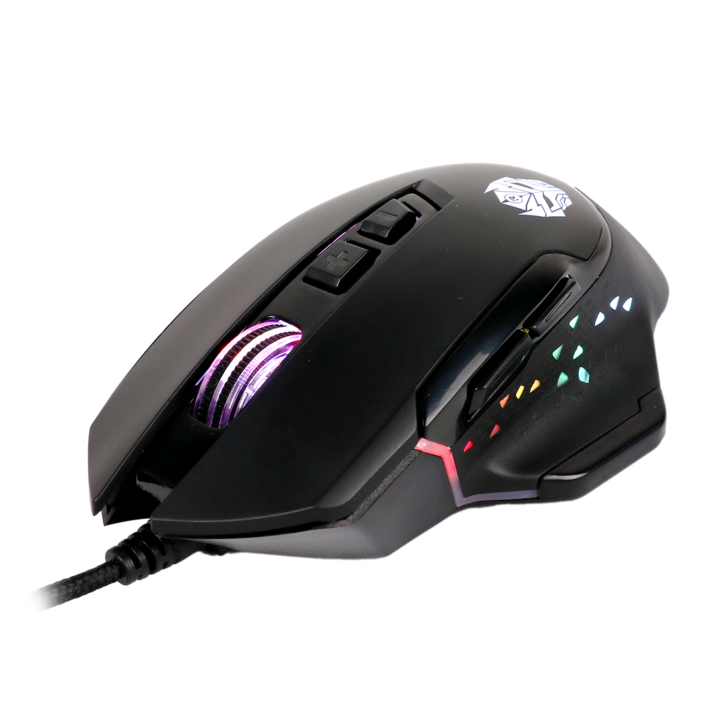

|
A computer mouse (plural mice, sometimes mouses)[nb 1] is a hand-held pointing device that detects two-dimensional motion relative to a surface. This motion is typically translated into the motion of a pointer on a display, which allows a smooth control of the graphical user interface of a computer. The first public demonstration of a mouse controlling a computer system was in 1968. Mice originally used two separate wheels to track movement across a surface: one in the X-dimension and one in the Y. Later, the standard design shifted to utilize a ball rolling on a surface to detect motion. Most modern mice use optical sensors that have no moving parts. Though originally all mice were connected to a computer by a cable, many modern mice are cordless, relying on short-range radio communication with the connected system. |
|
|
In addition to moving a cursor, computer mice have one or more buttons to allow operations such as the selection of a menu item on a display. Mice often also feature other elements, such as touch surfaces and scroll wheels, which enable additional control and dimensional input. |
|
Different Images of Computer Mouse |
|
|  | |